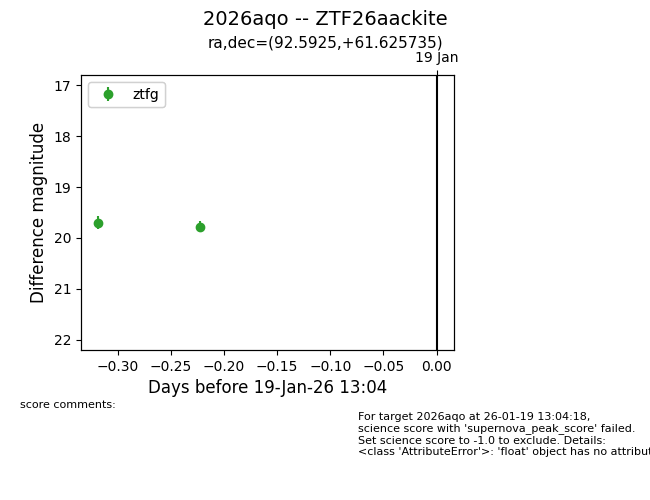
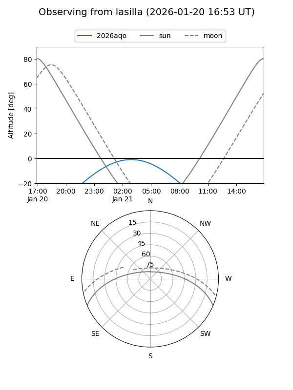
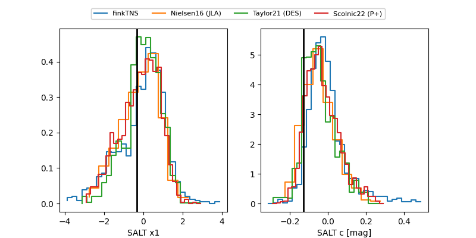

2026aqo
Target 2026aqo at 2026-01-19 13:06
Aliases and brokers:
FINK: link
Lasair: link
ALeRCE: link
TNS: link
YSE: link
alt names
ZTF26aackite (ztf,fink_ztf)
2026aqo (tns,yse)
Coordinates:
equatorial (ra, dec) = 92.5925,+61.62574
equatorial (HMS+DMS) = 06:10:22.19,+61:37:32.65
galactic (l, b) = (152.5759,+19.01516)
Flags:
Photometry:
last ztfg=19.78
2 ztfg detections
Lightcurve

Visibility


Additional plots
